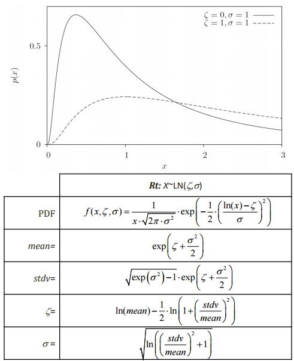

Continuous Random Variable
Class Name
- RContinuousRandomVariable
Location in Objects Pane
- Models > Parameter > Random Variable > Continuous
Properties
Object Name
- Name of the object in Rt
- Allowable characters are upper-case and lower-case letters, numbers, and underscore (“_”).
- The name is unique and case-sensitive.
Current Value
- Current realization of the random variable
Distribution Type
- Probability distribution of the random variable
- The distribution type is followed by the distribution parameters inside parentheses.
- These parameters, respectively, correspond to Parameter 1 to Parameter 4 that appear as some other properties below.
- If, for instance, only two parameters appear inside parentheses for a particular distribution type, only Parameter 1 and Parameter 2 are applicable to that distribution.
- If the “User-defined” distribution is selected, two more properties are shown, namely, X Points and PDF Points, described below.
Mean
Standard Deviation
Coefficient Of Variation
- Coefficient of variation of the random variable
- It is a standardized measure of dispersion of a probability distribution.
- If changed, the values of Standard Deviation and Parameter 1 to Parameter 4 properties are re-calculated.
Parameter 1
Parameter 2
Parameter 3
Parameter 4
Uncertainty Type
- Indicates whether the random variable describes an “Aleatory” or an “Epistemic” uncertainty.
- This is employed, for instance, when computing model response standard deviation sensitivities in FORM.
- For more information, see Der Kiureghian (2009)
X Points
- Vector of random variable realizations for which the PDF values are given to the property below, i.e., PDF Points in a “User Defined” distribution.
PDF Points
- Vector of PDF values of the random variable realizations that are given to the property above, i.e., X Points in a “User Defined” distribution.
Read-only Properties
Alpha Importance Measure
- Element of the \(\boldsymbol{\alpha}\) importance vector, computed in FORM, that corresponds to this random variable.
- \(\boldsymbol{\alpha}\) is a unit vector that indicates the relative importance of the random variables involved in a FORM analysis when correlations are neglected/non-existent.
- For more information, see Der Kiureghian (2005).
Gamma Importance Measure
- Element of the \(\boldsymbol{\gamma}\) importance vector, computed in FORM, that corresponds to this random variable.
- \(\boldsymbol{\gamma}\) is a unit vector that indicates the relative importance of the random variables involved in a FORM analysis when correlations are considered.
- For more information, see Der Kiureghian (2005).
FOSM Importance Measure
- Element of the FOSM importance vector, \(\boldsymbol{\omega}\), computed in FOSM, that corresponds to this random variable.
- \(\boldsymbol{\omega}\) is a unit vector that indicates the relative importance of the random variables involved in a FOSM analysis.
- For more information, see Der Kiureghian (2005).
- \(\boldsymbol{\omega}\) is computed as
$$\boldsymbol{\omega}\ = - {\nabla {g^T}{\mathbf{D _ X}} \over {\left\| {\nabla {g^T}{\mathbf{D_X}}} \right\|}}$$
where \(\nabla {g}\) = gradient of the limit-state function, \(g\), and \(\mathbf{D_X}\) = standard deviation matrix of random variables, \(\mathbf{X}\).
Delta Sensitivity Measure
- Element of the \(\boldsymbol{\delta}\) sensitivity vector, that corresponds to this random variable.
- \(\boldsymbol{\delta}\) is a dimensionless vector that is computed by multiplying the standard deviation matrix by the gradient of the reliability index with respect to the mean of random variables.
- For more information, see Der Kiureghian (2005).
Eta Sensitivity Measure
- Element of the \(\boldsymbol{\eta}\) sensitivity vector, that corresponds to this random variable
- \(\boldsymbol{\eta}\) is a dimensionless vector that is computed by multiplying the standard deviation matrix by the gradient of the reliability index with respect to the standard deviation of random variables
- For more information, see Der Kiureghian (2005)
Kappa Sensitivity Measure
- Element of the \(\boldsymbol{\kappa}\) sensitivity vector, that corresponds to this random variable.
- \(\boldsymbol{\kappa}\) is a dimensionless vector equal to the gradient of the reliability index with respect to the coefficient of variation of random variables.
Beta Sensitivity Wrt Mean
- Derivative of the reliability index, \({\beta}\), with respect to the mean of this random variable
Beta Sensitivity Wrt Standard Deviation
- Derivative of the reliability index, \({\beta}\), with respect to the standard deviation of this random variable
Right-click Menu
Remove
Plot PDF
- Plots the probability density function of the random variable in the range of mean ± three standard deviations.
Plot CDF
- Plots the cumulative distribution function of the random variable in the range of mean ± three standard deviations.
Plot Inverse CDF
- Plots the inverse cumulative distribution function of the random variable in the range of mean ± three standard deviations
Get PDF
- Prints the probability density function value for a given random variable realization on the output pane.
Get CDF
- Prints the cumulative distribution function value for a given random variable realization on the output pane.
Get Inverse CDF
- Prints the inverse cumulative distribution function value, i.e., the realization, for a given probability on the output pane.
Types of Distribution
Beta Distribution

Chi-Squared Distribution
Exponential Distribution
Gamma Distribution
Gumbel Distribution
Laplace Distribution

Logistic Distribution

Lognormal Distribution

Normal Distribution

Rayleigh Distribution
t Distribution

Weibull Distribution
Wald Distribution

Levy Distribution

Irvin-Hall Distribution

Birnbaum-Saunders Distribution

Type-2 Gumbel Distribution

Pareto Distribution

F Distribution

Arcsine Distribution

References
- Der Kiureghian, A. (2005). First-and second-order reliability methods. In E. Nikolaidis, D. M. Ghiocel, & S. Singhal (Eds.), Engineering design reliability handbook. Boca Raton, Florida: CRC Press
- Der Kiureghian, A., & Ditlevsen, O. (2009). Aleatory or epistemic? Does it matter? Structural Safety, 31(2), 105–112